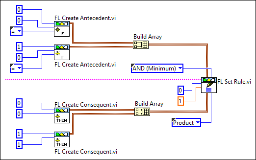

|
Note��You cannot specify how this VI calculates the truth value of an aggregated rule consequent. This VI always uses the greatest degree of membership of the individual consequents to calculate the truth value of the aggregated rule consequent. |
The section of block diagram you just created resembles the following image:
